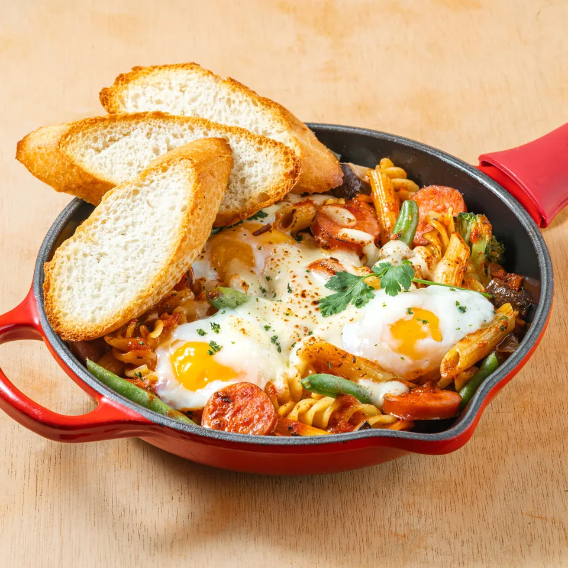
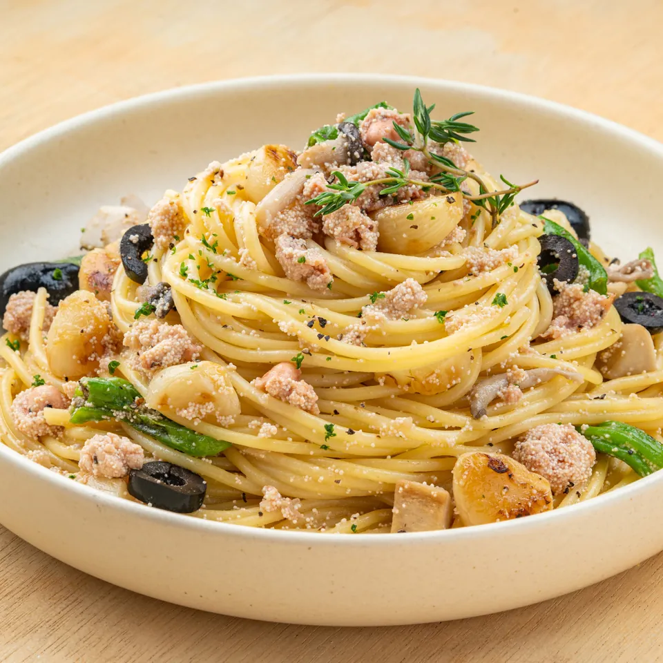
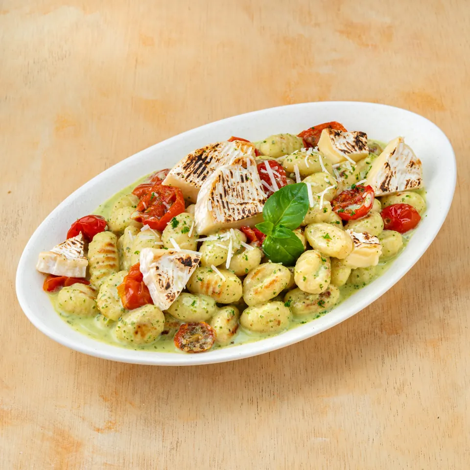

TantoTanto 탄토탄토
意大利餐厅 · 首尔建大入口站步行5分钟
TantoTanto（탄토탄토）是一家位于首尔广津区建大入口站附近的休闲意大利餐厅。店内有橙色灯光和靠窗的黄色长沙发，提供适合分享的意面、烩饭和牛排。自带葡萄酒和清酒免开瓶费。
店铺信息
- 地址
- 首尔特别市 广津区 峨嵯山路33街 49 2层
서울 광진구 아차산로33길 49 2층 - 最近地铁站
- 建大入口站（2号线、7号线）2号出口，步行5分钟（约350米）
- 营业时间
- 每天 11:00–22:00，无固定休息日
- 休息时间
- 周一至周五 15:00–17:00 · 周六日 15:00–16:00
- 最后点餐
- 午餐 工作日14:30 / 周末14:50 · 晚餐 20:50
- 人均
- 约10,000–30,000韩元。意面14,800韩元起，招牌牛排32,800韩元
- 预约
- CatchTable 或 NAVER 预约（最多6人）。7人以上请致电 +82-2-2039-2915
- 自带酒水
- 葡萄酒、清酒免开瓶费，威士忌每瓶30,000韩元
- 儿童
- 欢迎带孩子，提供儿童座椅
- 停车
- 无专用停车场，可使用附近收费停车场（한아름 528주차장）
- 电话
- +82-2-2039-2915
交通指南
- 从建大入口站2号出口出来，沿大路直走，经过 Olive Young、Baskin Robbins 和 Daiso。
- 在 Mega MGC Coffee（메가MGC커피）的路口，左转进入有人行横道的小巷。
- 在“시선”店前右转，再往上走一点。
- 左手边建筑的2楼就是 TantoTanto，从车站步行约5分钟。
菜单
菜单附有韩文名称，点餐时可直接指给店员看。价格已含税。
招牌菜

西冷牛排奶油意面 채끝스테이크 크림
微辣奶油宽面配西冷牛排100克，店内人气第一。
19,800韩元
北非蛋（地狱蛋） 샥슈카(에그인헬)
香辣番茄酱配短意面和三颗水波蛋，附法棍。
19,800韩元
明太子蒜香橄榄油意面 명란 알리오올리오
明太子配青椒的橄榄油意面，清爽不腻。
15,800韩元
布里奶酪罗勒团子 브리&바질 뇨끼
罗勒团子配布里奶酪和油渍番茄干。
18,800韩元
招牌牛排 하우스 스테이크
澳洲西冷牛排200克配烤蔬菜。
32,800韩元
全部菜单
意面
| 水芹蛤蜊意面미나리 봉골레 | 18,800韩元 |
| 黑松露奶油意面블랙트러플 크림 | 21,800韩元 |
| 千层面라자냐 | 19,800韩元 |
| 松露蒜香橄榄油意面트러플 알리오올리오 | 15,800韩元 |
| 图文巴奶油虾仁意面투움바 | 15,800韩元 |
| 香辣奶油意面스파이시 크림 파스타 | 14,800韩元 |
| 扇贝奶油意面관자 크림 파스타 | 18,800韩元 |
| 布拉塔奶酪番茄意面부라타치즈 뽀모도로 | 18,800韩元 |
| 三文鱼排玫瑰酱意面연어스테이크 로제 | 17,800韩元 |
| 海鲜番茄意面해산물 토마토 | 17,800韩元 |
| 鲜虾玫瑰酱意面쉬림프 로제 파스타 | 15,800韩元 |
米饭·烩饭
| Tanto 泡菜炒饭탄토 김치볶음밥 | 16,800韩元 |
| 水芹牛排石锅饭미나리 스테이크 솥밥 | 22,800韩元 |
| 番茄牛排烩饭토마토 스테이크 리조또 | 19,800韩元 |
| 扇贝玫瑰酱烩饭관자 로제 리조또 | 18,800韩元 |
| 紫苏奶油烩饭들깨 크림 리조또 | 17,800韩元 |
牛排·沙拉·小食
| BBQ 肉排配松露薯条BBQ찹스테이크 & 트러플감자튀김 | 18,800韩元 |
| 黑胡椒肉排配松露薯条블랙페퍼 찹스테이크 & 트러플감자튀김 | 18,800韩元 |
| 西班牙蒜香虾감바스 | 13,800韩元 |
| 牛排沙拉스테이크 샐러드 | 17,800韩元 |
| 时令水果乳清奶酪沙拉계절과일 & 리코타 샐러드 | 12,800韩元 |
| 布拉塔奶酪芝麻菜沙拉부라타 루꼴라 샐러드 | 14,800韩元 |
常见问题
需要预约吗？
不预约也可以用餐，但周末晚上人较多。可通过 CatchTable 或 NAVER 预约（最多6人），7人以上请致电。
不会说韩语可以点餐吗？
可以。本页菜单都附有韩文名称，直接给店员看即可。
可以自带葡萄酒吗？
可以。葡萄酒和清酒免开瓶费，威士忌每瓶30,000韩元。
适合带孩子吗？
适合。欢迎带孩子用餐，店内有儿童座椅。
人均消费多少？
人均约10,000–30,000韩元。意面14,800韩元起，招牌牛排32,800韩元。
官方链接
Google 地图NAVER 地图CatchTable（预约）Instagram한국어 (tantotanto.store)